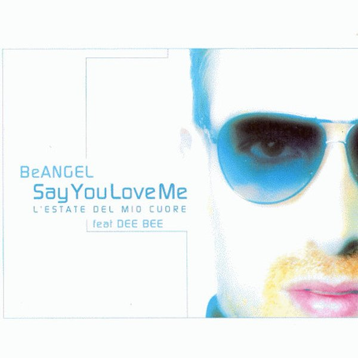

remix
Say You Love Me
Be Angel feat. Dee Bee · remix di Provenzano & Promise Land
- etichetta
- Respiri Digitali
- uscita
- 2007

e su altre 2 di altre etichettein fondo alla pagina
Il pezzo compare su altre 2 compilation di altre etichette, fra il 2007 e il 2009: DJ Zone 48 - Dance Session 21 e No More Angels On Planet Earth Episode 02 Essential Remixes.